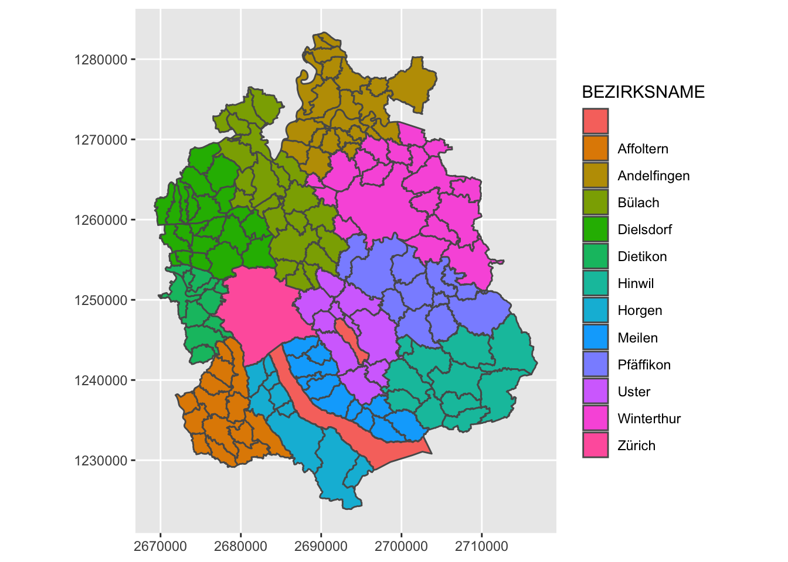

4.1 Static Maps
4.1.1 Prerequisit
Before you start making maps however, you will have to familiarize yourself with importing raster or vector data into R in the first place. For Vector data, you can read chapter 2.2 Vector data from the book “Geocomputation with R”. The next chapter 2.3 Raster data provides a very good overview on rasterdata in R
4.1.2 Static maps with ggplot2
4.1.2.1 Basics
library(sf)
## Linking to GEOS 3.8.1, GDAL 3.1.4, PROJ 6.3.1
library(tidyverse)
## ── [1mAttaching packages[22m ─────────────────────────────────────── tidyverse 1.3.0 ──
## [32m✔[39m [34mggplot2[39m 3.3.3 [32m✔[39m [34mpurrr [39m 0.3.4
## [32m✔[39m [34mtibble [39m 3.0.6 [32m✔[39m [34mdplyr [39m 1.0.3
## [32m✔[39m [34mtidyr [39m 1.1.2 [32m✔[39m [34mstringr[39m 1.4.0
## [32m✔[39m [34mreadr [39m 1.4.0 [32m✔[39m [34mforcats[39m 0.5.1
## ── [1mConflicts[22m ────────────────────────────────────────── tidyverse_conflicts() ──
## [31m✖[39m [34mtidyr[39m::[32mextract()[39m masks [34mraster[39m::extract()
## [31m✖[39m [34mdplyr[39m::[32mfilter()[39m masks [34mstats[39m::filter()
## [31m✖[39m [34mdplyr[39m::[32mlag()[39m masks [34mstats[39m::lag()
## [31m✖[39m [34mdplyr[39m::[32mselect()[39m masks [34mraster[39m::select()
getwd()
## [1] "/Users/runner/work/book/book"
eire <- read_sf("sample_data/spData/eire.shp")The most basic plot consists of a ggplot() initiation and a single layer. In case of sf data, you can add a layer with geom_sf(). If the coordinate system is unknown, the axes will be labelled with the numerical values of the coorindates.
st_crs(eire)
## Coordinate Reference System: NA
ggplot(eire) +
geom_sf()
However, if the coordinate system is known, the WGS84 Coordinates are labelled and used as the major and minor grid lines.
eire <- st_set_crs(eire, "+proj=utm +zone=30 +ellps=airy +units=km")
ggplot(eire) +
geom_sf()
As always in ggplot, if you want to use a column from your dataset as an input for, say, colour, you need to specify this with aes():
ggplot(eire) +
geom_sf(aes(fill = INCOME))
There are various ways to beautify this simple plot:
ggplot(eire) +
geom_sf(aes(fill = log(INCOME)), colour = "grey") +
labs(title = "Counties of the Irish Republic",
subtitle = expression("Distribution of Income (log"[10]*")"),
fill = "") +
scale_fill_viridis_c() +
theme_void() +
theme(legend.position = "bottom")
4.1.2.2 Adding Raster Maps Files (geotiffs)
While vector data is very easily implemented in ggplot2, rasterdata is a little harder. Its complicated enough with standard Raster Data, and even more so with raster maps. There are two packages that facilitate the combination of rastermaps and ggplot:
However, we will do without these packages to learn more on how rasters work and be as flexible as possible.
If you don’t have the time or patience to read through the explanation, the following function takes a path to a raster and returns a dataframe with x/y coordinates as well as a column with the hex colours for the according cell.
rastermap_to_dataframe <- function(path) {
require(tiff)
require(raster)
raster_file <- raster::brick(path)
bands_n <- nbands(raster_file)
if(bands_n == 1){
raster_indexed <- readTIFF(path,indexed = TRUE)
raster_colormap <- attr(raster_indexed,"color.map")
raster_colormap_hex <- rgb(raster_colormap[1,],raster_colormap[2,],raster_colormap[3,])
raster_df <- data.frame(coordinates(raster_file), values = raster_colormap_hex[getValues(raster_file)+1])
} else if(bands_n == 3){
raster_df <- data.frame(
coordinates(raster_file),
values = rgb(values(raster_file[[1]]),values(raster_file[[2]]),values(raster_file[[3]]),maxColorValue = 255)
)
}
return(raster_df)
}4.1.2.2.1 With Colours
Tif files with colours can either be single band or include multiple bands in a single tif file. These need to be treated differently. Let’s take two variants of the swiss raster map 1:50k map. One is a single band dataset, the other a 3-band dataset.
library(raster)
library(rgdal)
## rgdal: version: 1.5-21, (SVN revision 1105)
## Geospatial Data Abstraction Library extensions to R successfully loaded
## Loaded GDAL runtime: GDAL 3.1.4, released 2020/10/20
## Path to GDAL shared files: /Users/runner/work/_temp/Library/sf/gdal
## GDAL binary built with GEOS: TRUE
## Loaded PROJ runtime: Rel. 6.3.1, February 10th, 2020, [PJ_VERSION: 631]
## Path to PROJ shared files: /Users/runner/work/_temp/Library/rgdal/proj
## Linking to sp version:1.4-5
## To mute warnings of possible GDAL/OSR exportToProj4() degradation,
## use options("rgdal_show_exportToProj4_warnings"="none") before loading rgdal.
path_1b <- "sample_data/SMR_Musterdaten/SMR50_LV95_KOMB_Mosaic.tif"
path_3b <- "sample_data/SMR_Musterdaten/SMR50_LV95_KREL_10L_Mosaic.tif"
raster(path_1b)
## class : RasterLayer
## dimensions : 800, 800, 640000 (nrow, ncol, ncell)
## resolution : 2.5, 2.5 (x, y)
## extent : 2599000, 2601000, 1196000, 1198000 (xmin, xmax, ymin, ymax)
## crs : NA
## source : /Users/runner/work/book/book/sample_data/SMR_Musterdaten/SMR50_LV95_KOMB_Mosaic.tif
## names : SMR50_LV95_KOMB_Mosaic
## values : 0, 255 (min, max)
raster(path_3b)
## class : RasterLayer
## band : 1 (of 3 bands)
## dimensions : 400, 400, 160000 (nrow, ncol, ncell)
## resolution : 5, 5 (x, y)
## extent : 2599000, 2601000, 1196000, 1198000 (xmin, xmax, ymin, ymax)
## crs : NA
## source : /Users/runner/work/book/book/sample_data/SMR_Musterdaten/SMR50_LV95_KREL_10L_Mosaic.tif
## names : SMR50_LV95_KREL_10L_Mosaic
## values : 0, 255 (min, max)As you can see in the output of raster(path_3b), only one of the 3 bands was imported with raster::raster. In the case of multiband rasters, it’s better to use raster::brick:
map_1b <- raster(path_1b)
map_3b <- brick(path_3b)4.1.2.2.1.1 Singleband
A singleband RasterLayer can be regarded as vector of numeric values arranged in a matrix with some additional metadata. The metadata can be view with str(), the values can be obtained with getValues().
str(map_1b)
## Formal class 'RasterLayer' [package "raster"] with 12 slots
## ..@ file :Formal class '.RasterFile' [package "raster"] with 13 slots
## .. .. ..@ name : chr "/Users/runner/work/book/book/sample_data/SMR_Musterdaten/SMR50_LV95_KOMB_Mosaic.tif"
## .. .. ..@ datanotation: chr "INT1U"
## .. .. ..@ byteorder : chr "little"
## .. .. ..@ nodatavalue : num -Inf
## .. .. ..@ NAchanged : logi FALSE
## .. .. ..@ nbands : int 1
## .. .. ..@ bandorder : chr "BIL"
## .. .. ..@ offset : int 0
## .. .. ..@ toptobottom : logi TRUE
## .. .. ..@ blockrows : int 1
## .. .. ..@ blockcols : int 800
## .. .. ..@ driver : chr "gdal"
## .. .. ..@ open : logi FALSE
## ..@ data :Formal class '.SingleLayerData' [package "raster"] with 13 slots
## .. .. ..@ values : logi(0)
## .. .. ..@ offset : num 0
## .. .. ..@ gain : num 1
## .. .. ..@ inmemory : logi FALSE
## .. .. ..@ fromdisk : logi TRUE
## .. .. ..@ isfactor : logi FALSE
## .. .. ..@ attributes: list()
## .. .. ..@ haveminmax: logi TRUE
## .. .. ..@ min : num 0
## .. .. ..@ max : num 255
## .. .. ..@ band : int 1
## .. .. ..@ unit : chr ""
## .. .. ..@ names : chr "SMR50_LV95_KOMB_Mosaic"
## ..@ legend :Formal class '.RasterLegend' [package "raster"] with 5 slots
## .. .. ..@ type : chr(0)
## .. .. ..@ values : logi(0)
## .. .. ..@ color : logi(0)
## .. .. ..@ names : logi(0)
## .. .. ..@ colortable: chr [1:256] "#000000" "#FFFFFF" "#D6EBD8" "#BDDFB5" ...
## ..@ title : chr(0)
## ..@ extent :Formal class 'Extent' [package "raster"] with 4 slots
## .. .. ..@ xmin: num 2599000
## .. .. ..@ xmax: num 2601000
## .. .. ..@ ymin: num 1196000
## .. .. ..@ ymax: num 1198000
## ..@ rotated : logi FALSE
## ..@ rotation:Formal class '.Rotation' [package "raster"] with 2 slots
## .. .. ..@ geotrans: num(0)
## .. .. ..@ transfun:function ()
## ..@ ncols : int 800
## ..@ nrows : int 800
## ..@ crs :Formal class 'CRS' [package "sp"] with 1 slot
## .. .. ..@ projargs: chr NA
## ..@ history : list()
## ..@ z : list()
head(getValues(map_1b),50)
## [1] 37 37 37 37 37 37 37 37 37 37 37 37 37 37 37 37 37 37 37 37 37 37 37 37 37
## [26] 37 37 37 37 37 37 37 37 37 37 37 37 37 37 37 37 37 37 37 37 37 37 37 37 37
extent(map_1b)
## class : Extent
## xmin : 2599000
## xmax : 2601000
## ymin : 1196000
## ymax : 1198000The first 50 cells of this RasterLayer contain the value 37. This value 37 is associated with a specific colour, which can be viewd in the colortable of the RasterLayer.
coltab <- colortable(map_1b)
head(coltab)
## [1] "#000000" "#FFFFFF" "#D6EBD8" "#BDDFB5" "#A5CF91" "#53A935"
scales::show_col(coltab,labels = FALSE)
In order to plot this RasterLayer in ggplot, we need to convert it into a dataframe. You can imagine that this is converting the wide matrix into a very long table with three columns: x and y coordinates of the lower left corner of each cell and a value specifying what the cell holds.
map_1b_df <- data.frame(coordinates(map_1b),values = getValues(map_1b))
head(map_1b_df)
## x y values
## 1 2599001 1197999 37
## 2 2599004 1197999 37
## 3 2599006 1197999 37
## 4 2599009 1197999 37
## 5 2599011 1197999 37
## 6 2599014 1197999 37We can now use the values column in ggplot2 to specify the fill aesthetic. If we then pass the colortable as our fill values, the colours will be matched correctly. However we need two additional tricks:
- name the colourtable to make sure the correct colours are correct to the according values
- wrap the
valuescolumn infactor()so that theggplot2does not mistake the numeric values as a continuous scale:
names(coltab) <- 0:255 # 1:256 would be wrong by 1
ggplot() +
geom_raster(data = map_1b_df, aes(x,y, fill = factor(values))) +
scale_fill_manual(values = coltab) +
theme(legend.position = "none") +
coord_equal()
Note that there are thee ways to plot this type of data in ggplot2: geom_rect, geom_tile and geom_raster. The latter is “a high performance special case for when all the tiles are the same size” (see the docs.
Alternatively, you can add the hex colourcode to the dataframe and use scale_fill_identitiy().
map_1b_df <- mutate(map_1b_df, colorvalue = coltab[values+1])
ggplot() +
geom_raster(data = map_1b_df, aes(x,y, fill = colorvalue)) +
scale_fill_identity() +
theme(legend.position = "none") +
coord_equal()The big drawback of using ggplot2 in this way: you cannot add a second layer with a fill aesthetic, since ggplot2 only allows one per plot.
4.1.2.2.1.2 Multiple bands
In case of a 3-Band Raster Brick, each layer holds a value of 0 to 255 representing colours in the RGB colour model. Usually, the first layer represents Red, the second Green and the third Blue. We can subset the RasterBrick into the individual RasterLayers using double brackets ([[1]] for the first layer).
map_3b
## class : RasterBrick
## dimensions : 400, 400, 160000, 3 (nrow, ncol, ncell, nlayers)
## resolution : 5, 5 (x, y)
## extent : 2599000, 2601000, 1196000, 1198000 (xmin, xmax, ymin, ymax)
## crs : NA
## source : /Users/runner/work/book/book/sample_data/SMR_Musterdaten/SMR50_LV95_KREL_10L_Mosaic.tif
## names : SMR50_LV95_KREL_10L_Mosaic.1, SMR50_LV95_KREL_10L_Mosaic.2, SMR50_LV95_KREL_10L_Mosaic.3
## min values : 0, 0, 0
## max values : 255, 255, 255
map_3b[[1]]
## class : RasterLayer
## band : 1 (of 3 bands)
## dimensions : 400, 400, 160000 (nrow, ncol, ncell)
## resolution : 5, 5 (x, y)
## extent : 2599000, 2601000, 1196000, 1198000 (xmin, xmax, ymin, ymax)
## crs : NA
## source : /Users/runner/work/book/book/sample_data/SMR_Musterdaten/SMR50_LV95_KREL_10L_Mosaic.tif
## names : SMR50_LV95_KREL_10L_Mosaic.1
## values : 0, 255 (min, max)As with the singleband raster, we can extract the Values (this time RGB-Values) of each layer with getValues().
head(values(map_3b[[1]]),50)
## [1] 27 27 31 27 67 124 124 124 124 123 123 123 122 123 122 66 27 57 97
## [20] 113 123 123 124 100 68 68 68 68 68 68 68 36 27 27 27 27 38 117
## [39] 105 97 97 100 111 119 54 27 27 27 27 66Again like with the single band raster, we now transform the Raster into a dataframe, this time storing the rgb values in columns (instead of the hex values as before).
map_3b_df <- data.frame(
coordinates(map_3b),
r = values(map_3b[[1]]),
g = values(map_3b[[2]]),
b = values(map_3b[[3]]))
head(map_3b_df)
## x y r g b
## 1 2599002 1197998 27 26 35
## 2 2599008 1197998 27 26 35
## 3 2599012 1197998 31 28 36
## 4 2599018 1197998 27 26 35
## 5 2599022 1197998 67 59 58
## 6 2599028 1197998 124 114 110With the function rbg() we can transform values into hex-codes.
rgb(10,10,10,maxColorValue = 255)
## [1] "#0A0A0A"
ggplot() +
geom_raster(data = map_3b_df, aes(x,y,fill = rgb(r,g,b,maxColorValue = 255))) +
scale_fill_identity() +
coord_equal()
Tipp: if your file is to large and ggplot has trouble plotting it fast, you can use aggregate to reduce the resolution
map_3b_lowres <- raster::aggregate(map_3b, fact = 5)4.1.2.2.2 Greyscale
In greyscale maps, raster cannot find a associated colortable to match the values to rgb or hex colours.
map_grey_path <- "sample_data/SMR_Musterdaten/SMR50_LV95_KGRS_Mosaic.tif"
map_grey <- raster(map_grey_path)
head(getValues(map_grey))
## [1] 31 31 31 31 31 31
head(colortable(map_grey))
## [1] "#000000" "#FFFFFF" "#F4F4F4" "#E7E7E7" "#D3D2D3" "#CAC9CA"However, the package tiff can find the rgb values of a tiff, we just need to set indexed = TRUE and get the color.map attribute of the output:
library(tiff)
index <- readTIFF(map_grey_path,indexed = TRUE)
colormap <- attr(index,"color.map")
colormap[,1:8] # only showing the first 8 columns (of 256)
## [,1] [,2] [,3] [,4] [,5] [,6] [,7] [,8]
## [1,] 0 1 0.9568627 0.9058824 0.8274510 0.7921569 0.7843137 0.7725490
## [2,] 0 1 0.9568627 0.9058824 0.8235294 0.7882353 0.7803922 0.7686275
## [3,] 0 1 0.9568627 0.9058824 0.8274510 0.7921569 0.7843137 0.7725490This is an index with three rows (Red, Green and Blue) and 265 columns (with are the Values from getValues()). We can now use rgb() to turn this matrix into a vector of 265 hex colours:
coltab <- rgb(colormap[1,],colormap[2,],colormap[3,])
scales::show_col(coltab,labels = FALSE)
Like before, we now turn the RasterLayer into a dataframe and use the Values and the newly created colortable to assign the correct values:
map_grey_df <- data.frame(coordinates(map_grey),values = getValues(map_grey))
names(coltab) <- 0:255
ggplot() +
geom_raster(data = map_grey_df, aes(x,y, fill = factor(values))) +
scale_fill_manual(values = coltab) +
theme(legend.position = "none") +
coord_equal()